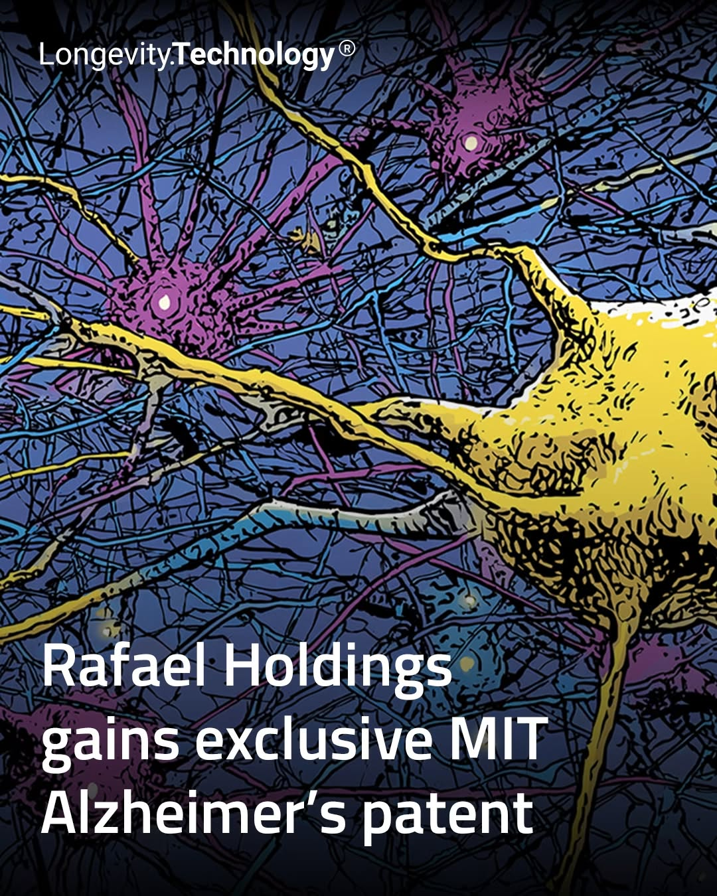

His opinion is negative.
I know very little about Cavadex— so I plan to reserve judgement either way until an actual human trial is published.
Louis shares a Dr. Ford Brewer video giving a negative review of Cavadex, a cyclodextrin product marketed for heart disease. He says he knows little and will wait for a human trial.
His opinion is negative.
I know very little about Cavadex— so I plan to reserve judgement either way until an actual human trial is published.
 ▶Video · YouTube · Dr. Ford Brewer MD MPHThe Shocking TRUTH About THIS FDA-Banned EnemaToday I'm reviewing Cavadex, which is being marketed as the solutión for heart disease, is this true? Check out our NEW Metabolic Risk Assessment Kit: Check out my plaque reversal video: Check out my Eggsperiment: Research in this video:youtu.be
▶Video · YouTube · Dr. Ford Brewer MD MPHThe Shocking TRUTH About THIS FDA-Banned EnemaToday I'm reviewing Cavadex, which is being marketed as the solutión for heart disease, is this true? Check out our NEW Metabolic Risk Assessment Kit: Check out my plaque reversal video: Check out my Eggsperiment: Research in this video:youtu.be
Louis notes a case series of 20 patients taking cyclodextrin was recently published, cautioning that case series sit at the bottom of the evidence hierarchy but that research has to start somewhere.

Louis notes that cyclodextrin, a controversial alternative heart disease treatment, may help treat Alzheimer's, with a news item on an MIT patent deal targeting brain cholesterol transport in ApoE4-linked disease.
Louis, who drinks low-sugar pomegranate juice himself, pushes back on viral claims that pomegranate cuts arterial plaque by 30%. He says the highest-quality trial found no benefit, so it should not replace proven therapies.
Louis pushes back on claims that only vegan diets reverse plaque. He lists the only six randomized diet trials showing plaque reversal (Lifestyle Heart, STARS, SCRIP, PREDIMED, CORDIOPREV, DISCO), all primarily plant-based but none strictly vegan (even Ornish allowed egg whites and non-fat dairy), and summarizes the common foods they emphasized and limited.
The post summarises a video describing an NEJM study of 16,000 asymptomatic people showing plaque accumulates first in the neck and leg arteries, during the 20s to 40s, before the heart. Heart scans such as coronary calcium may therefore miss early disease; carotid intima-media thickness ultrasound can detect peripheral plaque, and the ankle-brachial index offers a simple at-home check for leg artery blockage.

Summarises SCOT-HEART (4,146 patients with stable chest pain, standard care vs standard care plus coronary CTA). CTA guidance lowered coronary death or nonfatal MI to 2.3% from 3.9%, mainly by directing aspirin and statin use to patients with plaque. Total procedures were similar by year 5; results apply to chest-pain patients only.